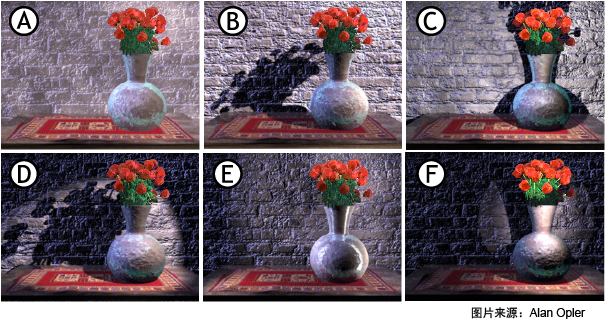
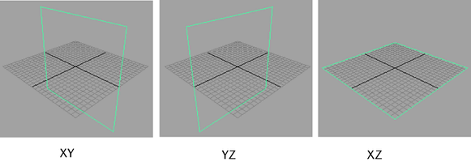
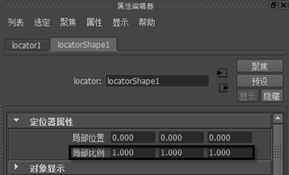

对象(Objects)
- NURBS 基本体(NURBS Primitives)
- 通过此菜单中的选项，可使用 NURBS 曲面或曲线创建各种几何基本体形状。可以在原点位置创建基本体，也可以在场景视图中的鼠标单击位置创建基本体（“交互式创建”(Interactive Creation)），具体取决于基本体选项设置。大多数选项均适用于这两种基本体类型。
选择“创建 > NURBS 基本体”(Create > NURBS Primitives) >（对象类型）>
 ，以设置 NURBS 基本体选项(NURBS Primitives Options)。
，以设置 NURBS 基本体选项(NURBS Primitives Options)。
- 多边形基本体(Polygon Primitives)
- 此菜单中的选项用于在原点或根据已设置的基本体选项，创建基于多边形的几何基本体，在场景视图（“交互式创建”(Interactive Creation)）中任何地方单击均可。然后可以使用标准工具和多边形菜单项移动、缩放、旋转和重新定形新对象。
注： 将视图设置为“高质量渲染”(High Quality Rendering)模式时，只有在完成基本体创建步骤后，使用“交互式创建”(Interactive Creation)选项创建的基本体才会显示着色效果。
另请参见创建多边形基本体。
许多多边形类型的某些创建设置是相同的，例如，“分段”(Divisions)、“轴”(Axis)和“创建 UV”(Create UVs)。另请参见公用设置多边形基本体。
选择“创建 > 多边形基本体”(Create > Polygon Primitives) >（对象类型）>
，以设置多边形基本体选项(Polygon Primitives Options)。
- 体积基本体(Volume Primitives)
- 通过该菜单，可创建各种体积基本体，可将这些基本体与灯光和雾结合使用以创建大气体积效果。详细信息请参见体积基本体选项(Volume Primitives Options)。
- 灯光(Lights)
-
使用此菜单中的选项可创建各种灯光。选择“创建 > 灯光”(Create > Lights) > <灯光类型>
灯光类型：A.环境光，B.平行光，C.点光源，D.聚光灯，E.区域光和 F.体积
以查看特定于每种灯光类型的设置：
- 环境光(Ambient Light) - 来自任何位置的间接光 (A)。请参见“环境光”(Ambient Light)选项。
- 平行光(Directional Light) - 来自一个方向的灯光 (B)。请参见“平行光”(Directional Light)选项。
- 点光源(Point Light) - 从单个不可见点发射的均匀灯光 (C)。请参见“点光源”(Point Lights)选项。
- 聚光灯(Spot Light) - 模拟聚光灯的平行光 (D)。请参见“聚光灯”(Spot Light)选项。
- 区域光(Area Light) - 模拟来自窗户的灯光的矩形灯光(E.) 请参见区域光选项(Area Light Options)。
- 体积光(Volume Light) - 可以设置源形状的灯光 (F)。请参见“体积光”(Volume Light)选项。
- 摄影机(Cameras)
- 使用此菜单中的选项可创建各种摄影机，如基本摄影机或立体摄影机。选择“创建 > 摄影机 > 摄影机”(Create > Cameras > Camera) ，以设定“创建摄影机”(Create Camera)选项。
- 摄影机(Camera)
- 创建单节点摄影机，该摄影机为基本摄影机。
有关摄影机类型的详细信息，请参见 Maya 摄影机类型。
- 摄影机和目标(Camera and Aim)
-
创建双节点摄影机，该摄影机是基本摄影机，具有用于使摄影机指向指定“注视”点的目标向量控制。
- 摄影机、目标和上方向(Camera, Aim, and Up)
-
创建三节点摄影机，该摄影机是基本摄影机，具有用于旋转摄影机的目标向量控制和上方向向量控制。
- 立体摄影机(Stereo Camera)
-
创建默认的立体摄影机。
如果已在场景中创建并注册自定义装备，则您的自定义装备也会出现在该菜单中。详细信息请参见创建自定义装备(Create a custom rig)和自定义立体装备编辑器(Custom Stereo Rig Editor)。
- 多立体装备(Multi Stereo Rig)
-
为立体摄影机创建默认的多重摄影机装备。
如果已在场景中创建自定义的多重摄影机装备，自定义多重摄影机装备也将出现在该菜单中。详细信息请参见创建多重摄影机装备(Create a multi-camera rig)和多重摄影机装备工具(Multi-Camera Rig Tool)。
- 曲线工具(Curve Tools)
-
从下列选项中选择：
- CV 曲线工具(CV Curve Tool)
-
用于通过放置控制顶点 (CV) 绘制 NURBS 曲线。
选择“CV 曲线工具”(CV Curve Tool) >
，以设置 CV 曲线工具选项(CV Curve Tool Options)。
- EP 曲线工具(EP Curve Tool)
- 用于通过放置编辑点，绘制 NURBS 曲线。
选择“EP 曲线工具”(EP Curve Tool) >
，以设置 EP 曲线工具选项(EP Curve Tool Options)。
- Bezier 曲线工具(Bezier Curve Tool)
- 凭借该菜单项，可通过在场景中单击以创建锚点来徒手绘制 Bezier 曲线。也可通过单击并拖动来创建锚点和切线。
选择“Bezier 曲线工具”(Bezier Curve Tool) >
，以设置 Bezier 曲线工具选项(Bezier Curve Tool Options)。
- 铅笔曲线工具(Pencil Curve Tool)
- 徒手绘制 NURBS 曲线。选择“铅笔曲线工具”(Pencil Curve Tool) > 以设置“铅笔曲线设置”(Pencil Curve Settings)。
选择“曲线次数: 1 线性”(Curve Degree: 1 Linear)选项可创建称为多段线的锯齿曲线。
另请参见 NURBS 曲线的组件(Components of NURBS curves)、绘制曲线(Draw curves)、创建 > EP 曲线工具(Create > EP Curve Tool)和创建 > CV 曲线工具(Create > CV Curve Tool)。
- 三点圆弧(Three Point Circular Arc)、两点圆弧(Two Point Circular Arc)
- 用于通过指定点并使用操纵器创建圆弧。
- 圆弧次数(Circular Arc Degree) - “1 线性”(1 Linear)创建锯齿状曲线。
- “分段数”(Sections) - 设置弧的曲线分段数。
选择“三点圆弧”(Three Point Circular Arc)或“两点圆弧”(Two Point Circular Arc) >
以设置选项：
另请参见创建弧(Create arcs)。
- 类型(Type)
- 将多边形网格添加到场景（具有设置了样式的文本形状），并将其连接到类型节点。
另请参见类型工具(Type Tool)。
- 扫描网格(Sweep Mesh)
-
使用“扫描网格”(Sweep Mesh)沿曲线路径的长度从曲线创建多边形网格，然后使用 SweepMeshCreator 自定义剖面形状和大小以及对齐和细分。
注：- “扫描网格”(Sweep Mesh)是一个插件，必须在插件管理器(Plug-in Manager)中激活。
- 在运行“扫描网格”(Sweep Mesh)之前，必须先创建并选择一条曲线。
- SVG
- 将多边形网格添加到具有默认 SVG 对象形状的场景。
另请参见 SVG 工具(SVG Tool)。
- Bifrost 图表(Bifrost Graph)
-
将 Bifrost 图表添加到场景中以创建程序效果。请参见 适用于 Maya 的 Bifrost Extension。
构建辅助工具(Construction Aids)
- 构造平面(Construction Plane)
- 创建可将构造工具捕捉到的构造平面。
- 极轴(Pole Axis) - 设置构造平面的方向。默认值为 XY 平面。

- 大小(Size) - 设置平面的大小（以栅格为单位）。
“构造平面”(Construction Plane)中的选项包括：
另请参见创建基本对象(Create basic objects)和捕捉到激活的曲面(Snap to a live surface)。
- 极轴(Pole Axis) - 设置构造平面的方向。默认值为 XY 平面。
- 自由图像平面(Free Image Plane)
-
自由图像平面是未附加到摄影机的图像平面，您可以在场景中选择并变换该图像平面。选择该选项可创建自由图像平面。
自由图像平面在您加载新图像时调整其大小以匹配图像分辨率。请参见编辑和对齐自由图像平面(Editing and aligning free image planes)，以获取更多信息。
有关图像平面属性的详细信息，请参见图像平面属性(Image plane attributes)。
注：目前，Maya 软件渲染器不支持渲染自由图像平面。
- 定位器(Locator)
- 在场景中创建定位器对象。定位器是一个小图标，类似在空间中标记点的 x-y-z 轴。非常适用于角色的用户界面；例如，可以将关节设置为定位器的子对象，这样移动定位器就可以推拉关节。
定位器形状节点上的属性可以更改定位器的局部比例；也就是说，可以更改定位器的大小（不影响定位器的子对象或受定位器约束的对象）。
 - 注释(Annotation)
- 创建箭头指向选定对象的文本标签。
删除注释不会从场景中移除相应的定位器节点。要删除定位器节点，请执行下列操作之一：
- 删除注释节点后，选择定位器节点并将其删除。
- 选择注释，然后按向上行进式拾取热键（默认为上箭头键）。系统将选定定位器节点，删除该节点也将删除注释节点。
- 选择“文件 > 优化场景大小”(File > Optimize Scene Size)。（另请参见优化场景大小选项(Optimize Scene Size Options)和对对象进行注释或添加文档(Annotate or document objects)。）
- 测量工具(Measure Tools)
- “距离工具”(Distance Tool)、“参数工具”(Parameter Tool)和“弧长工具”(Arc Length Tool)工具创建的测量对象用于测量和注释场景中的对象。移动注释点时，会自动更新列出的测量。
另请参见测量两点之间的距离和显示曲线或曲面上的参数或弧长值。
场景管理(Scene Management)
- 通用场景描述 (USD)(Universal Scene Description (USD))
-
使用此菜单中的选项创建 USD 后台文件。请参见创建 USD 后台文件。
- “使用新层创建后台文件”(Stage with New Layer)：创建空后台文件。
- “从文件创建后台文件”(Stage From File)：从文件创建 USD 后台文件。
- 场景集合(Scene Assembly)
- 使用此菜单中的选项可创建集合引用和定义节点。
- “集合定义”(Assembly Definition) - 创建 assemblyDefinition 节点。默认情况下，“添加定位器表示”(Add Locator representation)选项处于启用状态。该选项用于将定位器表示添加到新的集合定义。
- “集合引用”(Assembly Reference) - 创建 assemblyReference 节点。
- 空组(Empty Group)
- 在场景层次中创建空组节点。
另请参见变换对象(Transforming objects)、场景层次(Scene hierarchy)和将对象分组(Group objects together)。
- 集(Sets)
- 通过“集”(Set)和“划分”(Partition)选项可以创建集和划分。集是对象的松散分组，可用于各种用途。划分是集的分组，用于确保集不会共享其成员。另请参见创建和编辑集和防止集的组合中有重叠的成员身份。“快速选择集”(Quick Select Set)子菜单用于基于当前选择创建新的快速选择集。另请参见保存和重用选择。
- 资产(Asset)
-
- “创建资产”(Create Asset) - 创建不与变换关联的资产。因此，不会在 DAG 层次中显示该资产，而且也无法在场景中对其进行变换。可以将资产外部的节点设置为资产的子对象，但必须使用父锚点或子锚点来执行此操作。
选择“创建资产”(Create Asset) >
以设置创建高级资产选项(Create Advanced Assets Options)。
- “创建变换资产”(Create Asset with Transform) - 创建资产，并将当前选定的任何节点自动放置到其中。变换节点也与资产相关联，从而使您能够像操纵组节点一样在场景和 DAG 层次中操纵资产节点。如果将其他节点设置为资产的子对象，这些节点将自动放置到资产中。
选择“创建变换资产”(Create Asset with Transform) >
以设置创建变换资产选项(Create Asset with Transform Options)。
- “创建资产”(Create Asset) - 创建不与变换关联的资产。因此，不会在 DAG 层次中显示该资产，而且也无法在场景中对其进行变换。可以将资产外部的节点设置为资产的子对象，但必须使用父锚点或子锚点来执行此操作。